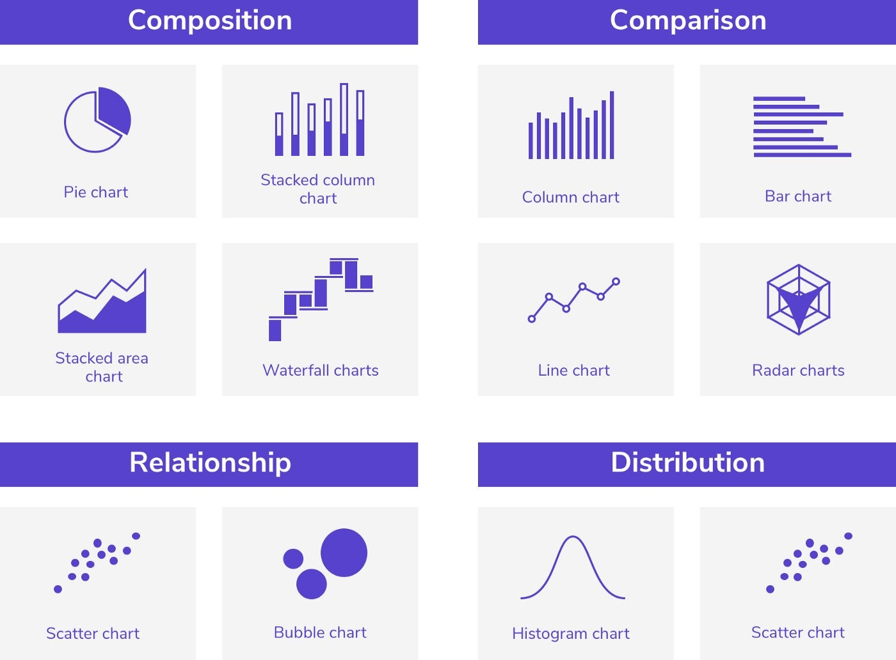

Project Overview
This project is a sales and profitability analysis for a retail or office supply company. The dashboard provides insights into sales performance, profit distribution across product categories and regions, and customer analytics. The goal is to give stakeholders a comprehensive view of the business's financial health and identify areas for improvement.
Technical Implementation
The analysis is presented through a data visualization dashboard, built using a business intelligence tool; Tableau.The dashboard incorporates various chart types:
- Line charts for trend analysis of sales, profit, and customer metrics
- Bar charts for sales by sub-category
- Heat map for profit by subcategory and region
- Table for top customer analysis

Challenges
These are the challenges encountered during the analysis
- Data integration from various sources
- Ensuring data accuracy and consistency across different metrics
- Designing an intuitive dashboard that conveys key insights effectively
- Balancing the level of detail with overall clarity in the visualization
Solution
The implemented dashboard addresses these challenges by:
- Providing high-level KPIs (sales, profit, customers) with month-over-month comparisons
- Breaking down sales and profit data by product categories and regions
- Highlighting top-performing customers and their contribution to profits
- Using color coding and varied chart types to make data easily digestible

Projected Results & Impacts
Impacts Expected
- Improved decision-making through readily available performance metrics
- Identification of top-performing and underperforming product categories and regions
- Enhanced customer relationship management by focusing on high-value clients
- Potential for increased sales and profitability by leveraging insights from the analysis
Lessons Learned
Key Takeaways
- The importance of presenting both high-level and detailed views of data
- The value of integrating multiple data sources for comprehensive business insights
- The effectiveness of visual representations in conveying complex information quickly
- The need for ongoing data analysis to track performance and identify trends over time
Summary
This analysis provides a solid foundation for data-driven decision-making within the organization. Future iterations could potentially include more predictive analytics or deeper dives into specific areas of interest identified through this overview.